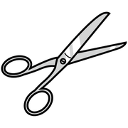
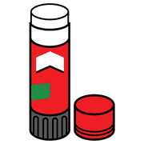
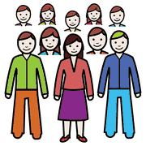
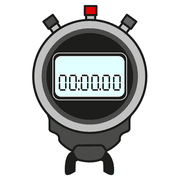
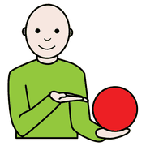

Primo incontro, modulo 3
Laboratorio: costruire una tavola
Prima del computer, carta e colla: costruire a mano una tavola fa capire la logica della CAA meglio di qualunque spiegazione.
il messaggio
chiave
Perché a mano
 disegnare
disegnare
forbici
collaAraWord è un programma diverso da Boardmaker, ma usa simboli liberi (ARASAAC) e permette di stampare subito. Quello che si impara con carta e forbici vale identico sul digitale.
La consegna

gruppo tabella
tabella costruire
costruireGruppi di 3-4 persone. Materiali: simboli stampati con AraWord, cartoncino A4 o A3, forbici, colla, pennarelli.
Ogni gruppo sceglie una routine vera della propria sezione e ne costruisce la tavola:
Domande guida per il gruppo
 domanda
domanda pensare
pensare parlare
parlare- Quanti passaggi ha la routine?Meglio 4-6.
- In che ordine vanno i simboli?Da sinistra a destra, dall'alto in basso.
- Serve un titolo?
- Quanto grandi i simboli?Dipende dall'età dei bambini.
per il
formatore
I tempi

cronometro tempocronometro
tempocronometro| Fase | Durata | Cosa fa il formatore |
|---|---|---|
| Lavoro di gruppo | 15 minuti | Gira tra i gruppi e fa domande se emergono difficoltà (troppi simboli, ordine poco chiaro). |
| Condivisione | 10 minuti | Raccoglie gli errori ricorrenti e li collega a quelli visti con Boardmaker. |
La condivisione

mostraregruppo ascoltare
ascoltareLe tavole si mettono una accanto all'altra. Si confrontano scelte diverse sulla stessa routine e si individuano insieme gli errori tipici: è il momento in cui si impara di più.